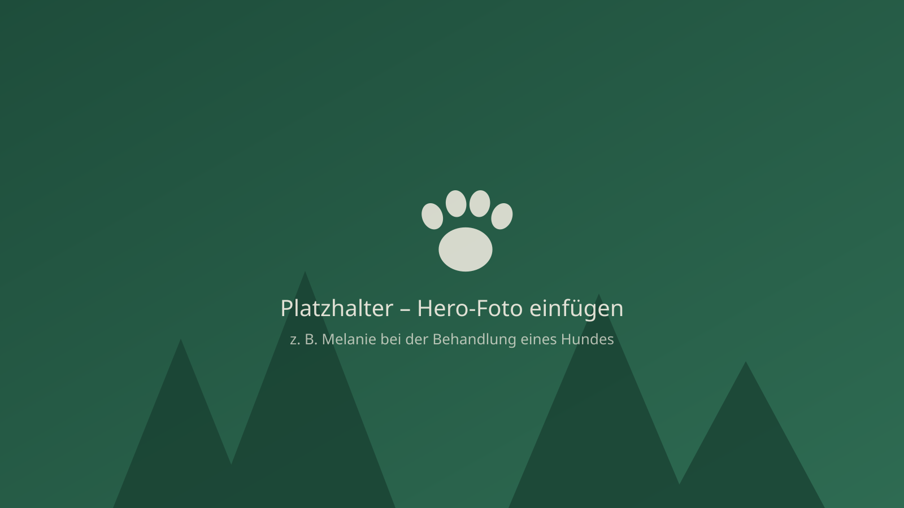
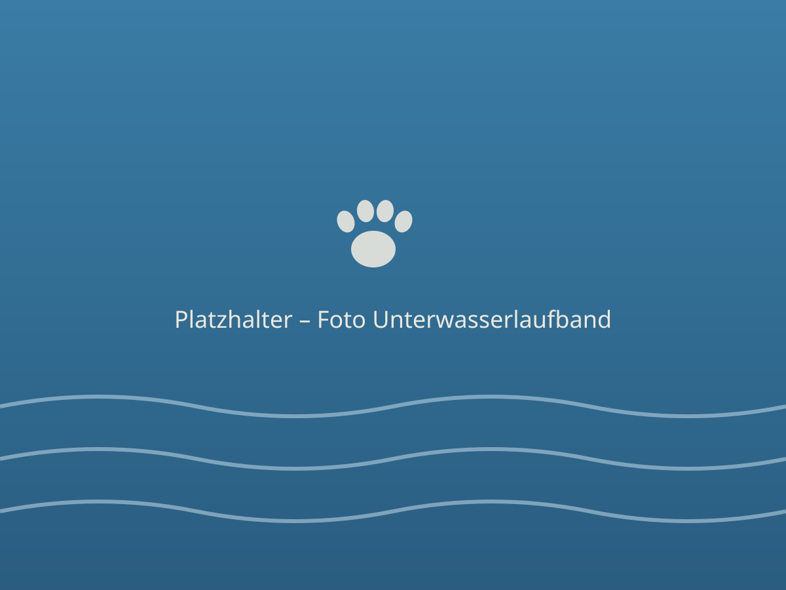
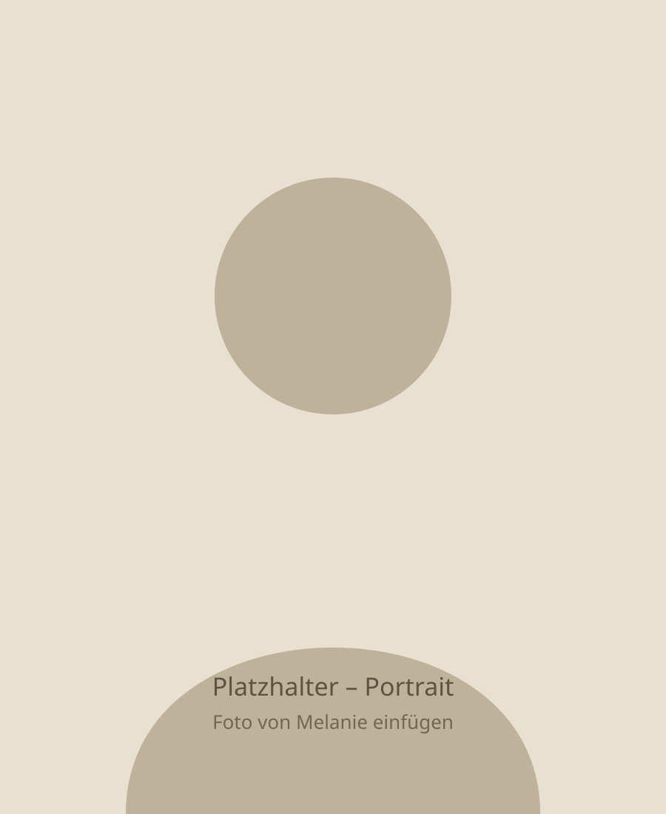

Physiotherapie & Osteopathie
Manuelle Techniken, Massagen und Bewegungstherapie lösen Verspannungen, verbessern die Beweglichkeit und unterstützen den gesamten Bewegungsapparat.

Tierphysiotherapie · Osteopathie · Akupunktur
Ganzheitliche Physiotherapie für Hunde und Katzen in Neubulach-Liebelsberg – mit Erfahrung, Einfühlungsvermögen und moderner Ausstattung wie dem Unterwasserlaufband.
Leistungen
Jedes Tier ist anders – deshalb beginnt jede Behandlung mit einem gründlichen Befund. Daraus entsteht ein individueller Therapieplan.
Manuelle Techniken, Massagen und Bewegungstherapie lösen Verspannungen, verbessern die Beweglichkeit und unterstützen den gesamten Bewegungsapparat.
Akupunktur nach traditioneller chinesischer Medizin – zur Schmerzlinderung, Entspannung und Aktivierung der Selbstheilungskräfte Ihres Tieres.
Ein bewährtes Naturheilverfahren: Die Wirkstoffe der Blutegel wirken entzündungshemmend und schmerzlindernd – z. B. bei Arthrose und Gelenkerkrankungen.
Sanfte, schmerzfreie Behandlung mit therapeutischem Laser – fördert die Wundheilung, regt den Zellstoffwechsel an und lindert Entzündungen.
Gelenkschonender Muskelaufbau im warmen Wasser – ideal nach Operationen, bei Arthrose oder zur Steigerung von Kondition und Beweglichkeit.
Mehr erfahren →
Hydrotherapie
Der Auftrieb des Wassers entlastet die Gelenke, während der Wasserwiderstand die Muskulatur gezielt kräftigt. So kann Ihr Tier schon früh nach einer Operation oder trotz Arthrose effektiv und schmerzarm trainieren.
Anwendungsgebiete
Die Tierphysiotherapie ersetzt nicht den Tierarzt – sie ergänzt die tierärztliche Behandlung. Gerne arbeite ich eng mit Ihrer Tierarztpraxis zusammen.

Über mich
Tierphysiotherapeutin & Akupunkteurin
Tiere liegen mir seit jeher am Herzen. Nach mehrjähriger Tätigkeit in einer Tierarztpraxis habe ich mich auf die Physiotherapie für Hunde und Katzen spezialisiert – mit dem Ziel, Schmerzen zu lindern, Beweglichkeit zurückzugeben und Lebensqualität zu erhalten.
In meiner Praxis in Neubulach-Liebelsberg nehme ich mir Zeit für jedes Tier: mit ruhiger Hand, viel Geduld und einem Behandlungsplan, der individuell auf Ihr Tier abgestimmt ist.
So einfach geht's
Rufen Sie an oder schreiben Sie per WhatsApp – wir besprechen kurz das Anliegen und vereinbaren einen Termin.
Beim ersten Termin untersuche ich Ihr Tier gründlich: Gangbild, Beweglichkeit, Muskulatur und Schmerzpunkte.
Auf Basis des Befunds erstellen wir gemeinsam einen Behandlungsplan – inklusive Übungen für zu Hause.
Kontakt
Termine nach Vereinbarung – telefonisch oder bequem per WhatsApp.